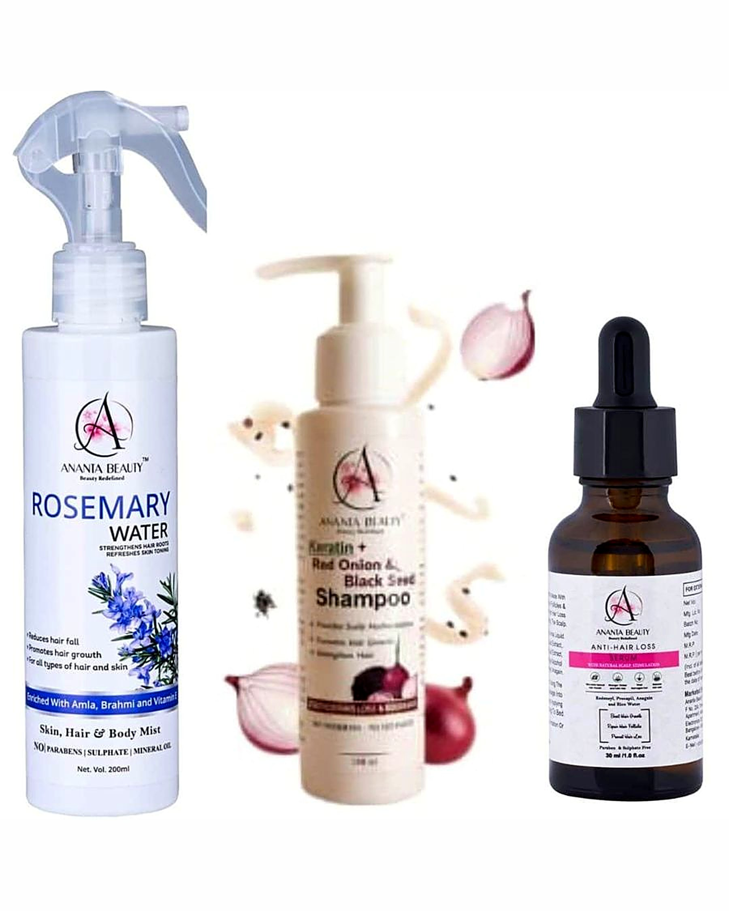
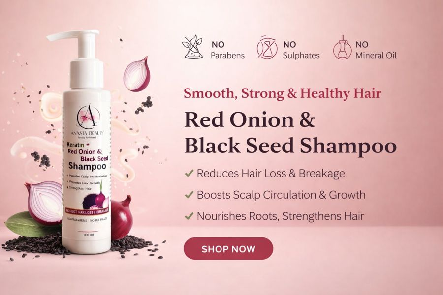

Herbal first
Rosemary, amla, brahmi and red onion do most of the work. Our product pages name what is in each bottle, so you are never guessing.
Rosemary, onion and time-tested herbal actives, blended into serums, shampoos and scalp sprays that go after hair fall, dull lengths and a scalp that has stopped feeling cared for.

Hair fall, a dry scalp, thinning at the parting, or just lengths that look tired. Each product below is built for one of those jobs, and each one is listed with its real name and price from our site.
Rosemary, amla, brahmi and red onion do most of the work. Our product pages name what is in each bottle, so you are never guessing.
Our formulas are free from parabens, sulphates, alcohol and mineral oils, as listed on our site, so you can check the label against what you read here.
Men and women, oily scalps and dry ends. Start with the one that matches the job, then add a second product when you want a fuller routine.

Ananta began with a simple question: why do the herbal routines our families trusted get dropped the moment a shiny new bottle shows up? We wanted to bring those plant ingredients back, and keep the parts of modern care that actually help: a formula that stays stable, a texture you enjoy using, and a label you can read.
So the range is built around the scalp, the part people forget. Rosemary water to refresh it, onion and black seed shampoos to clean it, and serums that do the slow, steady work of supporting thicker-looking hair over time.
This is one way to pair the range, not a medical plan. Check each pack's label for directions, and talk to a doctor if you have a scalp condition.
Use an onion or keratin shampoo on the scalp, not just the lengths. Massage it in for a minute, then rinse.
Mist the rosemary water spray onto the scalp on days you do not wash. It is light enough for that.
Work a few drops of the hair growth serum into the parting. Leave it on overnight, then wash in the morning if you prefer.
Hair grows in slow cycles. Judge a routine after a few months of steady use, not a few weeks.
These descriptions come from our product listings. We are not making medical claims here, and the labels on each pack are the final word.
Start with the thing you notice most. Each tile opens the matching part of the shop.
Start with the hair growth serums.
See serums 02The onion and keratin shampoos are built for the scalp.
See shampoos 03The rosemary water spray is the easiest to add.
See sprays 04Combos bring the shampoo, spray and serum together.
See combosTell us what you are noticing on your scalp or hair, and we will point you to the right starting product.